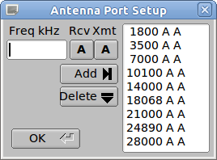
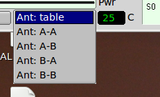

Antenna Port Assignments
To modify an existing entry in the Antenna Ports List:
select it with the mouse (left click)
Change the frequency (kHz), the port associated with transmit (A/B) and receive.
Press the Add button.
This will create a new entry in the table. You can then delete
the old entry by highlighting it and pressing the Delete button.
The table is a progressive entry system. If for example, in the
illustration to the left, the 7000 entry were "7000 B B" then all
transceiver operation from 7000 kHz to the next entry of 10100 kHz
would be on antenna port B for both transmit & receive. The
simplest table would be a single entry at 1800 A A. That would
cause the transceiver to always transmit & receive on Port A.
Be sure of your table entries before pressing the OK button.
Override Port Assignments
Under
most operating conditions you will want to use the antenna port
assignments as specified in the port configuration. You may on
occassion want to override that setting. The Ant: pick control
allows the selection of the Rx/Tx antenna combination. The 505DSP
can operate with Rx on either antenna
port and Tx on either antenna port independent of each other. The
default is to use the table.